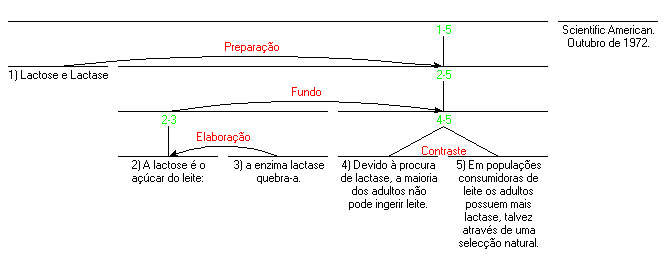
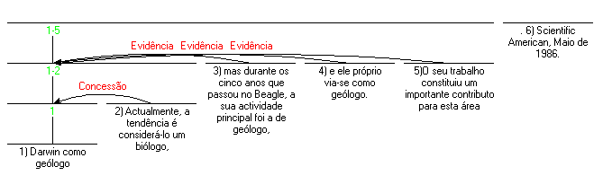

Introdução à Teoria da Estrutura Retórica
 |
|
INTRODUÇÃO À TEORIA DA ESTRUTURA RETÓRICA (RHETORICAL STRUCTURE THEORY: RST) História A RST resultou do trabalho de investigação em geração automática de texto, realizado por uma equipa de investigadores do Instituto de Ciências da Informação (Information Sciences Institute) da University of South California. Cerca de 1983, parte da equipa (Bill Mann, Sandy Thompson e Christian Matthiessen) observou, enquanto trabalhava na escrita de textos assistida por computador, que não existia qualquer teoria da estrutura ou função do discurso descrita suficientemente em pormenor para programar a geração automática de textos.
Na sua utilização quotidiana, um texto possui um tipo de unidade geralmente inexistente em qualquer recolha aleatória de frases ou orações. A RST proporciona uma explicação da coerência do texto. Mas o que é que se entende por coerência? Uma possível definição de coerência é a ausência de sequências ilógicas e lacunas. Ou seja, cada uma das partes de um texto coerente possui uma função, uma razão plausível para a sua existência, evidente para os leitores e, além disso, causa a impressão de que não lhe faltam quaisquer partes. A RST centra-se na primeira parte – um papel evidente desempenhado por cada uma das partes.
A RST tem como objectivo descrever textos, mais do que os processos de criação ou leitura e compreensão dos mesmos, e propõe uma série de estruturas possíveis (diferentes tipos de unidades fundamentais cuja ocorrência pode observar-se no texto), que pertencem a dois níveis: o primeiro nível inclui a "nuclearidade" e as "relações" (muitas vezes designadas “relações de coerência” na linguística). Não estudamos, aqui, o segundo nível de unidades: os esquemas.
O esquema estrutural mais frequente é aquele que representa duas unidades de texto (que, salvo raras excepções, são sempre adjacentes) relacionadas de forma a que uma delas desempenha um papel específico relativamente à outra. Utilizando como exemplo uma asserção seguida da evidência dessa mesma afirmação, poderemos observar que a RST estabelece uma relação de "Evidência" entre as duas unidades. A relação também pressupõe que a asserção é mais essencial ao texto do que a evidência, pelo que a asserção se converte no núcleo da relação, e a evidência no seu satélite. Não existem regras de natureza absoluta quanto à ordem das unidades núcleo e satélite, apesar de poder encontrar-se, na maior parte das relações, uma ordem mais provável. Existem, ainda, outros pares de unidades com características semelhantes:
Partindo simplesmente destas relações, poderemos demonstrar a análise de um texto. Apresenta-se, de seguida, o título e o resumo do início de um artigo publicado na revista Scientific American (traduzido). Para proceder à análise, dividiu-se o resumo em unidades numeradas. 
O processo de análise tem como objectivo proporcionar um método estruturado e bem definido para explicar parte dos elementos intervenientes na compreensão de um texto. O (ou a) analista, que geralmente se designa “observador” nos artigos sobre RST, afirma que, na sua perspectiva, as duas primeiras unidades (que explicam os termos lactose e lactase) têm como objectivo facilitar a compreensão do texto restante. Afirma, ainda, que a unidade número 2 proporciona dados adicionais acerca do conteúdo (ou, em geral, acerca da situação) apresentado na unidade número 1. Determina-se, assim, que as unidades 3 e 4 se encontram numa relação neutra de contraste. Todas estas observações se formulam em termos da intenção do autor, pelo que, por exemplo, se advoga que o autor pretendia que o leitor reconhecesse que as situações expressas nas unidades 3 e 4 são semelhantes em diversos aspectos, mas diferentes num aspecto em concreto que o autor pretende exprimir. A teoria não impõe ao observador a necessidade de encontrar uma função estrutural para cada elemento do texto. Porém, tratando-se de textos criados cuidadosamente, praticamente todos os textos possuem uma análise, em termos de RST, que atribui um papel estrutural a todos os elementos do texto. (Por vezes, por razões de complexidade ou de ambiguidade, o observador pode encontrar mais de uma análise.) Mais Relações De seguida, apresentamos informalmente um conjunto de relações. Na página de definições apresentamos uma lista exaustiva de definições de relações e respectivos exemplos. O conjunto de relações é, em princípio, aberto, mas o conjunto apresentado acima, definido em Mann e Thompson, 1988 (actualmente o artigo central sobre a RST) tem-se mostrado eficiente para diversos fins. Na página de definições faz-se uma distinção entre relações de conteúdo e relações de apresentação: as relações de conteúdo exprimem partes do tema do texto; as relações de apresentação facilitam o processo de apresentação. Acedendo a esta informação no website da RST, talvez seja pertinente ver mais alguns exemplos de análises RST. Na lista de análises não publicadas apresenta-se como referência "Sparky Lived!"; na lista de análises publicadas apresenta-se como referência "It's not laziness". Este artigo introdutório baseia-se nos outros exemplos do website, bem como na bibliografia.
Relações multi-nucleares Para além do esquema mais frequente de núcleo e satélite, existem, também, relações sem um único núcleo, tal como acontece com a relação de contraste, como se referiu anteriormente. Estas relações, que se designa multi-nucleares, são:
Observadores e definições O objectivo da RST é facilitar a análise de textos. Embora exista uma convenção gráfica para representar as estruturas de um texto, as relações que se observam num texto explicitam-se, sobretudo, através das definições das relações e outras estruturas da RST. A extensão da lista inicial de relações é possível sempre que a lista com a qual se está a trabalhar não é adequada. Em que é que consiste efectivamente a análise? A análise é um meio simbólico através do qual um leitor informado sobre a teoria pode explicar a unidade, a ligação e a coerência de qualquer texto escrito comum, através de afirmações explícitas. Cada uma das relações possui uma definição. A definição especifica tudo aquilo que o leitor de um texto deve considerar como verdadeiro, com a finalidade de estabelecer a relação em questão entre duas unidades de um texto. Seguidamente, apresenta-se de forma breve uma definição comum da relação “Condição”. A definição ilustra a definição propriamente dita, bem como o formato geral de todas as definições. A definição pode ser aplicada de forma sistemática por um observador ou observadora, a designação atribuída ao analista na RST.
Uma vez que o efeito nunca se encontra vazio, todas as observações ou conclusões do observador numa relação conferem ao autor uma intenção na escolha das unidades de texto unidas pela relação. E considerando que uma análise que atribui um papel a cada unidade também atribui uma intenção, possuímos, pois, um motivo de existência para cada elemento do texto. O observador de um texto examina o texto e encontra combinações consistentes de unidades e de relações (ou de outras estruturas) que compreendem todo o texto. Assim, o texto pode possuir mais de uma análise, seja porque o observador encontra situações de ambiguidade, seja porque pensa que a intenção do autor se explica melhor através de uma combinação de diferentes análises. Esta combinação, provavelmente, não pode ser representada através de uma estrutura em árvore; porém, as combinações em si são bastante raras. A "forma abreviada" de apresentação da definição acima referida tem como objectivo evidenciar o carácter epistemológico das observações. Em cada uma das conclusões do observador apresentadas, o observador declara que "É plausível para o observador que é plausível para o autor do texto que <a conclusão> está correcta." A principal influência na organização e pormenor das definições foi permitir o processo de observação em todos os casos. Exemplo de análise do texto “Darwin” com argumentos Este é um exemplo de análise, que parte de um resumo de um artigo publicado na revista Scientific American, em Maio de 1986, intitulado "Darwin como geólogo" (traduzido). Para efeitos de análise, dividiu-se o texto em cinco unidades, de um ponto de vista sintáctico, e incluiu-se o título como uma unidade adicional. 1) Darwin como geólogo 2) Actualmente, a tendência é considerá-lo um biólogo, 3) mas durante os cinco anos que passou no Beagle, a sua actividade principal foi a de geólogo, 4) e ele próprio via-se como geólogo. 5) O seu trabalho constituiu um importante contributo para esta área. O diagrama RST correspondente é o seguinte:
 Argumentos do observador: A tabela que se segue mostra os argumentos do observador ao estabelecer a primeira relação de Evidência no texto sobre Darwin:
Estes argumentos, juntamente com os argumentos correspondentes às outras duas relações de evidência e de concessão, constituem um grupo de aproximadamente 16 argumentos, e são essencialmente equivalentes ao diagrama. A possibilidade de explicitar os argumentos da análise permite comparar análises baseadas na RST com outras análises, desde que as outras análises sejam suficientemente explícitas. Comunicação implícita baseada nas relações retóricas O observador encontra-se numa posição semelhante à do leitor do texto, excepto quanto à natureza explícita da análise. As relações que o observador considera plausíveis são, geralmente, plausíveis também para o leitor. As relações, bem como as orações do texto, possuem conteúdo comunicativo próprio. Consideremos, por exemplo, que, uma vez que Darwin contribuiu de forma significativa para a geologia, podemos assumir este facto como evidência de que Darwin trabalhou como geólogo. A noção de evidência, embora não se torne explícita em parte alguma do texto, é comunicada através dele. Se modificarmos o texto de forma a negar a ideia de que a sua contribuição é evidência desse trabalho como geólogo, o texto torna-se incoerente, mas não contraditório. A noção de evidência, expressa de forma implícita, faz parte do conteúdo comunicativo do texto. Diversos artigos sobre a RST, sobretudo entre 1985 e 1992, designam estas contribuições implícitas por “proposições relacionais” (relational propositions). Esta comunicação implícita contribui significativamente para a possibilidade de "ler nas entrelinhas" e de perceber que é frequente encontrar comunicação implícita ao ler um texto. Resumo Uma vez que a RST proporciona, geralmente, uma análise para qualquer texto escrito cuidadosa e coerentemente, e uma vez que esta análise avança uma explicação motivada pela razão pela qual o autor incluiu cada um dos elementos no texto, a RST proporciona uma explicação da coerência textual independente das formas lexicais e gramaticais do texto. Graças à sua especificação do papel do observador, também proporciona uma base de discussão da objectividade e subjectividade da análise. Além disso, proporciona uma base funcional para o estudo das formas específicas do texto relevantes para o discurso: marcadores de discurso e outros marcadores formais da estrutura do discurso. Sempre que a RST identifica a estrutura interna de uma oração, estabelece-se uma base de estudo das funções de diferentes métodos de união de cláusulas, e, de forma mais abrangente, as relações entre estas formas de estrutura discursiva e outros elementos de coesão. Bibliografia Mann, W.C., e Thompson, S.A. 1988. Rhetorical Structure Theory: Toward a functional theory of text organization. Text, 8 (3). 243-281. |
||||||||||||||||||||||||||||||||||||||||||||||||||||||||||||||||||||||||||||||||||||||||||||||||||||||||||||||||||||||||||||||||||||||||||||||||||||
©2005-2025 William C. Mann, Maite Taboada. All rights reserved. |
|||||||||||||||||||||||||||||||||||||||||||||||||||||||||||||||||||||||||||||||||||||||||||||||||||||||||||||||||||||||||||||||||||||||||||||||||||||